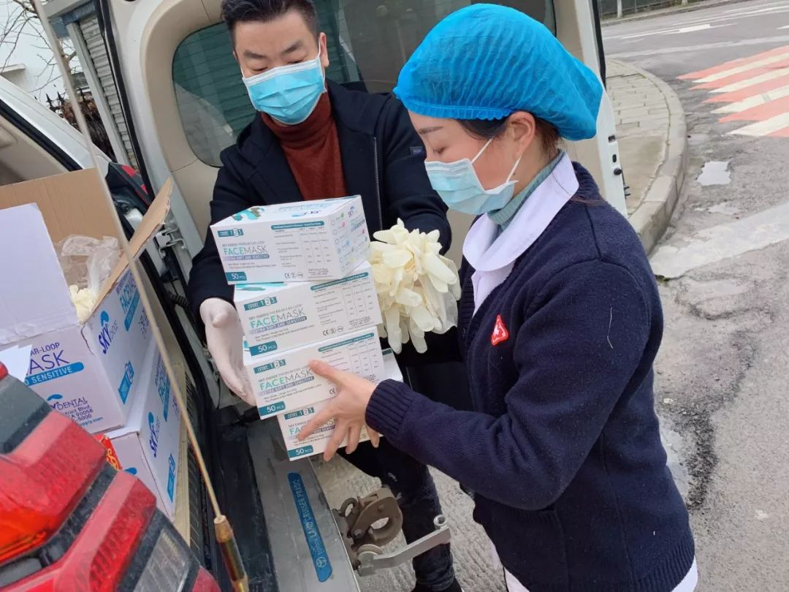
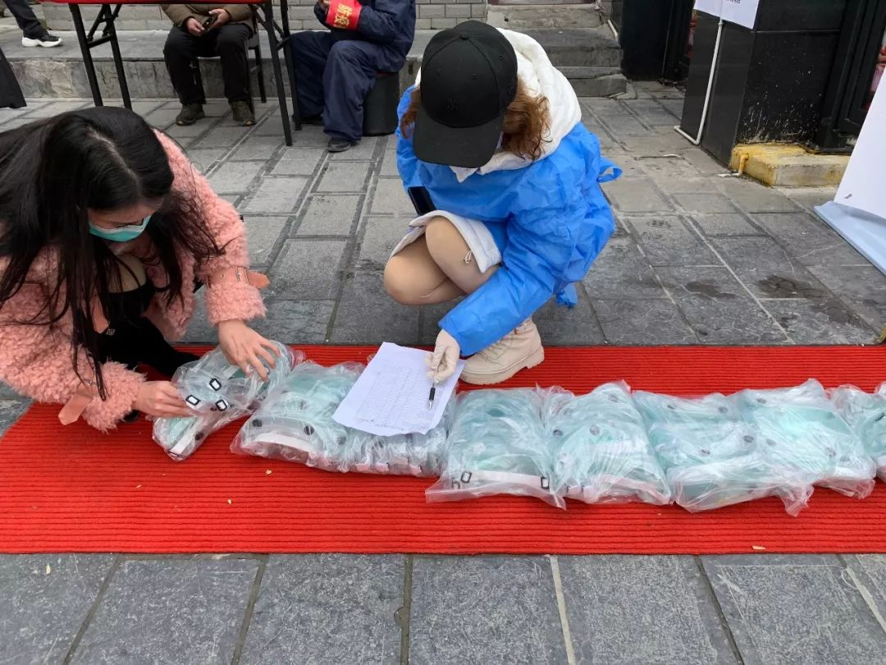
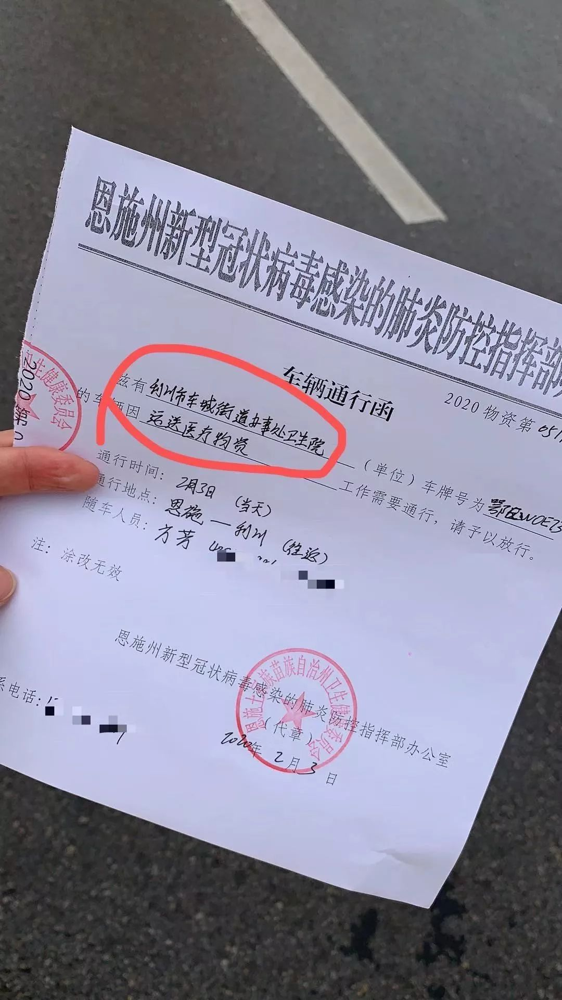
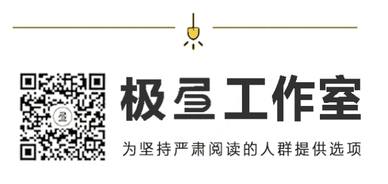

民间组织疯狂捐赠，为什么武汉的医院还缺物资？
原文链接 备份链接 「不是告急！是没有了！！」近两日，武汉协和医院、中南医院再次通过社交网络对外募集物资，对此，网友们纷纷发表质疑：全国各地都在往武汉捐医疗物资，物资到底去哪了？ 文 | 易方兴 郑丹 编辑 | 金石 采购难 没货，没货， …

医院人员领取志愿者送的医疗物资。受访者供图
文 | 李晓芳
编辑 | 胡大旗
新型冠状病毒肺炎疫情扩大后，湖北省内的医院医疗物资告急。从1月23日开始，很多医院自行发布物资募捐公告。几乎同一时间，各种民间力量行动起来，捐钱、义务募集物资、贡献物流渠道，将口罩、防护服、护目镜、医用酒精等急缺的物资输送到医院。
一些民间志愿者留意到，武汉周边地区同样形势严峻，防止出现“灯下黑”的情况，他们集中为黄冈、荆州、孝感等城市，乃至医疗资源更贫瘠的县、乡镇一级医疗单位输送物资。
作为官方力量的有益补充，在疫情扩大、医院物资急缺的时间段，志愿者的工作对一些医疗机构起到了救急的作用。他们也很清楚，“光靠我们这些民间力量，很难填补医院的物资缺口”，即使到现在，一线医院物资仍然存在庞大缺口。
以下是三位志愿者的口述：
1
_
*熊某人，“燃灯计划”志愿者组织*
「我以为他在说段子，
过了几秒反应过来，根本不是段子」
“燃灯计划”志愿者组织最早算是由一个叫“吾意清流”的妹子弄起来的，她是一名编剧，家里有一间工厂。1月23号武汉“封城”那天，她发了一条朋友圈，工厂还有60万只口罩，她舅舅说这种财不能发，打算全部捐赠给荆州政府。
从这批口罩开始，他们弄了个小团队运输物资，加入的志愿者越来越多，现在群里的志愿者大约有200多个。我在1月27号左右加入，主要负责物资的对接和配送工作。
“燃灯计划”早期的发起人都来自荆州、黄冈等武汉周边城市，他们在对接医院的时候，发现武汉之外的情况非常差，为了防止这些城市陷入“灯下黑”的境地，就想着给武汉周边地区输送一些医疗物资。
我这边建了16个地、市微信群（注：16个地、市，是指神农架林区外，剩余的湖北省12个地级市、1个自治州、3个省直辖县级市），把湖北省分成了16个组。每个组有组长，组长就在各个地方，根据城市的大小，还有他们的人脉情况，把自己的团队给拉起来，比如现在黄冈组有40多个志愿者，最小的潜江组现在只有一个人。
每个小组的志愿者会对接到更下一级的县、乡镇的医院和卫生所，到目前为止，我们一共对接了727所医疗单位，名单还一直在涨。
现在湖北省的交通都是受到管制的，不要说出城了，出小区都是非常困难的一件事情。把这些医疗物资配送到更下一级的医院，通过快递是完全不可能了，我们现在的解决办法，是在湖北省内建了6个分仓，后续会建到8个左右，1个分仓覆盖1到2个地方，这些分仓就可以接受外省的物资直接进省内，再由当地的组长协调人手去仓库把物资拉出来进行分发。
有些时候，我们会找志愿者车队，或者是蓝天救援队，找当地的红十字会或疾控办开证明，自己开车去仓库里拖货。有一次，为了运送14000只口罩到某市，我们找到了疾控办，疾控办再找到当地武警，用警车去拉的货。拖回来以后，组长会根据前期确认的医院情况，判断哪些医院更缺医疗物资，再根据物资数量分配。直接送到医院，就不经过其他组织了。
现在管控越来越严格。外地的车不愿意来湖北，因为来一趟，司机回去之后要隔离14天，相当于这14天没有任何收入，是很大的损失。就算你想来，也需要花很大功夫去办通行证。
我们前几天筹集到了一车医用酒精，要送到某地级市，发货地在山东。酒精属于易燃易爆物品，我们找到了湖北当地一个志愿者，他是一家化工园的老板，有存放易燃易爆物品的仓库，还找了运送易燃易爆物品的拖车，然后去请示当地的书记，批了一堆放行条，甚至还去省里请示，最后才从湖北发了一辆空车，用警车护送，开了一千多公里去拉回来。
运输途中，一批医疗物资在每个关卡都有可能被各个地方政府统筹掉。现在每个地区真的是特别难，我做志愿者工作也就短短4、5天时间，已经有很多政府官员来问我有没有相应的物资。放在以前，他们这些级别的官员，我根本不可能接触到。他们的红十字会实在筹集不到医疗物资了，就把我们的物资截留过去，进行分发，也算是完成了我们的志愿者工作。
现在一线医院最缺的就是口罩、防护服和医用酒精。有一次，我们配送9000只一次性医用口罩到恩施州，9000只口罩其实非常少，只有9箱，一箱20盒。恩施州的志愿小组硬生生拆分出来派给下面8个县市20多家医疗单位。
恩施那边到处山，我们靠本地车队给县一级医院和更小的卫生院送口罩，完全就是地狱模式。比如车主就送5个口罩到山里的卫生院，加起来才5块钱，油钱都远不止这个数，但没办法，你还得送，不送的话，人家就没有物资可以用了。
我们还碰到过恩施下面一个乡的卫生院医生，他走路到县里，拿了5个一次性医用口罩。他还主动跟县里说，县里的医院比较急，你们先用。也不用给我们送，我们自己来拿，给我们留5个口罩就行。物资就这么缺。
前几天，有一个黄冈的医生，晚上10点多了，在微信群说，他明天就要开始每天连续12个小时发热门诊的值班工作，他有一套防护服，就一套，接下来如果没有新物资补充，就一直用这套防护服了。他还没有防护口罩，女同事给了他一张卫生巾，可以放在普通口罩里面用。我一开始以为他在说段子，过了几秒反应过来，根本就不是段子。
我已经很久没有听人跟我说过物流配送费用是多少，湖北省内所有跟我们合作的组织，没有人再谈钱，大家都在贴钱、贴时间去搞这个事情。但说实话，我们很清楚，所做的事情杯水车薪，只是尽可能地去做一点事情。
2
_
胡海流，26岁，“口罩下乡”志愿小组
「“光靠我们这些民间力量，
很难填补医院的物资缺口”」
我是湖北黄冈人，家里就是重灾区，大家的注意力都在武汉，所以想到其他地方肯定会缺物资。
我没什么资源，跟朋友说了我的想法，他又找他的朋友，一起找可以给武汉周边地区提供物资的组织，最后成功对接了一批医疗物资到我们县里。我们不是做完这件事就完了，还希望把这个志愿者项目进行下去，取了个名字，叫“口罩下乡”。
我一开始是对接医院，家乡有些同学在医院工作，可以了解前线医院的一些情况，把他们的需求在微信群里提出来，再去找可以提供物资的组织。后面物资太繁杂了，各种各样的商品，所以我又接手了另一项工作，鉴别确认这些物资是不是符合医疗标准。
口罩是非常紧缺的物资。国内很多厂家都被统一调配了，不会再卖口罩给民间志愿组织。剩余的一些厂家，质量没办法保证，我们就决定不买。海外的各种各样的口罩都有，大部分是不匹配国内标准的，但很多医院也会接收，因为还有很多二线医护人员也需要口罩，他们不直接接触患者，普通N95口罩就可以使用，或者是按欧洲标准，符合FFP2类别的口罩也可以。
一线医护人员需要使用N95医用口罩，才能在手术过程中保护医生，防止血液等液体飞溅到口罩上，继而发生渗透。但所有捐赠口罩都要符合这个标准太难了，全国的医院几乎都需要，很难买到。很多县里医院的医生，就像你们在网上看到的那样，戴一层普通N95口罩，外面再套一层透明的塑料壳子来阻隔飞溅的液体或飞沫。
防护服和试剂盒也非常紧缺。县、镇一级的医院有很多发热病人，但没有试剂盒，医生没办法给他们确诊。防护这块，很多医生基本没什么防护可言，比如我同学所在的医院，他们可能就只有一个口罩，戴着口罩就去进行治疗了，防护服、护目镜统统没有。

志愿者清点护目镜数量。受访者供图
我们也出现过问题，在仙桃买医疗物资时，没有志愿者在本地，一个商家主动说给我们介绍其他厂家，后来发现他暗中拿了提成，一件隔离衣33元，他卖给我们就变成了36元。
但我一开始也没想通过红十字会这些组织去捐赠物资，效率很难保证。像我们这样直接和医院对接，尤其是联系好医疗物资，让医院自己去厂家那里提货，基本一天就能完成整个流程。稍微近一点的，可能花半天时间，物资就能直接到医院了。
现在物资有缓解吗？我看到的情况是并没有。很多医疗用品是一次性的，它是不断消耗的，送过去的物资就只能维持一周，或者只能维持两三天的样子。光靠我们这些民间力量，很难填补医院的物资缺口。
3
_
二师兄，25岁，“口罩下乡”志愿小组
「想到以前在武汉的日子，会很心痛，
这座城市怎么变成这个样子了？」
我从1月中旬就开始关注疫情信息，知道要买口罩，狂洗手，一直在刷新闻，特别焦虑。我加了一个打卡群，说在疫情期间，持续正常的生活，但我到第三天就没有打卡了，被踢出群。还加了一个读书群，计划在疫情期间坚持读书，结果一本没读。现在我打算开始读一点，看到很多人在看加缪的《鼠疫》，都说书里写的好像就是现在的情况，所以我也有点好奇。
焦虑情绪最严重的时候是除夕那晚，春晚还在照常进行，但网上铺天盖地全是求助信息，那一晚让我觉得特别魔幻。
大年初一那天，我们在微信群里聊，公益机构可以在这次疫情中做什么。我说我有一个朋友正在做网络募捐筹款的跟踪。群里一个朋友就私信我，他是黄冈蕲春县人，一直很关注湖北的疫情，之前看到家乡的医院发了筹集物资的公告，就来问我募捐是怎么做的，可不可以给他家乡的医院捐物资？
我们又拉了几个朋友，组成一个6人小组。当天傍晚，就对接到了武汉大学校友会的物资，确认可以给到县、镇的医院，第二天他们就发快递了。这是我们做的第一个对接。
开始做志愿者组织后，反而没有那么焦虑了，因为还算在行动，在做一些事情，可以分散注意力，不然会一直看着新闻停不下来。
有了第一次，组里一个朋友就说要不要再多做几个。当时我们预估自己的能力，计划是给10家医院对接运送物资就差不多了，到现在，真正对接的是14家医院。
考虑到县、乡镇本身就缺资源，而且物资一层层地从省到市，要经过比较长的时间才发放到他们手上，我们一开始的定位就是主要支持湖北省内县、乡镇一级的医院。
我们也没有经验，刚开始把医院、物资方，志愿者都拉到一个群里，流程非常乱，物资方可能会一下给所有医院群发消息，问他们需不需要物资。每家医院的需求又不太一样，就有点懵。
后来慢慢调整流程，我们先去找发了募捐公告的医院，打电话核实相关情况，确认了需求，再去找相应的物资对接，跟医院确认物资合不合适，能不能用，再确认数量，然后在物资方下单，跟物流，到了以后找医院开接收单，包括让他们拍反馈图，做公示总结。一切都是自己摸索出来的。
我们最后一次筹资购买防护服，花了差不多12个小时，募捐到了6、7万。那天非常紧张，因为要筹钱，还要确认这笔钱是不是能用到位。我们那天一直到很晚才能睡，联系好了厂家订了防护服，但老板一直不收我们的钱，就很担心会被骗。结果第二天，他真的就跳票了，医院的人已经到厂家打算提货了，结果老板说不发货。当时负责对接的志愿者特别着急，又联系了另外一个厂家，最后紧急带着医院的人跑了四个厂家，在湖北仙桃分批采购齐了需要的防护服。
那天所有事情弄完了，负责的志愿者特别感慨，跟我说她觉得今天很厉害，控制了4个车队，去了4个厂家，采购了4500套防护服，这些防护服又一一分发到了8个不同的县市乡镇。
其中有一个通山县的医生犹豫了很久，在想要不要开车过去仙桃取防护服。他们很缺物资，但一次来回好几个小时，大半天就没了，还需要费很多功夫开通行证，医生还担心去了也不一定能拿到防护服，说不定会在中途被截留。志愿者跟医生聊了三个多小时，才让医生有信心去仙桃试一试。

车辆通行证。受访者供图
最后医生顺利拿到了防护服，也都能用得上。我们都很感慨，对接的志愿者说，“眼泪唰的一下（掉下来）。”我们当时还约定，等疫情过去，要一起去通山县喝酒。
我是四川人，在武汉理工大学待了四年，毕业后去了广州。我在武汉的时候天天吐槽，说它又脏，空气又差，每天都要戴口罩出门。但我对武汉挺怀念也挺喜欢的，那个时候我们一起做校园团队，写学校里的新闻，你会觉得记录还是有一些力量和作用的。
想到以前留下的经历，去过的地方，自己的学校，现在可能全部都空了，或者是处于很混乱很绝望的状态，还是会很心痛，觉得这座城市怎么变成这个样子了？
等做完最后的账目审计和公示，我们小组的工作也差不多要宣告结束了。很现实的原因：我们都有工作，有两个没有工作的人要找工作，精力确实有限。现在也逐渐有政府的支持和物资过来了。
等疫情过去之后，和团队朋友去通山县喝酒是我一定要做的，不知道为啥，感觉是一个句号或者是一个纪念吧。
（应受访者要求，文中人物为化名）
后台回复“读者群”，加入更多讨论
作者简介


*****李晓芳*****
总幻想一夜暴富。

小昼
微信扫一扫赞赏作者 赞赏
长按二维码向我转账
受苹果公司新规定影响，微信 iOS 版的赞赏功能被关闭，可通过二维码转账支持公众号。
原文链接 备份链接 「不是告急！是没有了！！」近两日，武汉协和医院、中南医院再次通过社交网络对外募集物资，对此，网友们纷纷发表质疑：全国各地都在往武汉捐医疗物资，物资到底去哪了？ 文 | 易方兴 郑丹 编辑 | 金石 采购难 没货，没货， …
原文链接 备份链接 在这场抗击新病毒的战争中，一线医护人员不得不为自身防护揪心，他们和医院、捐赠人一起被迫卷入一场医疗物资的募捐赛 文 |《财经》记者王丽娜 辛颖 编辑 | 王小 这是历次疫情中，一线医院大批量第一次直接向公众募捐，也是 …
原文链接 备份链接 新型冠状病毒疫情像是一场突如其来的阴霾，在这个冬天笼罩了华中大地。相较于最受关注的武汉市民，周边城市的人们，像是处在阴霾边缘，遭受侵袭，却又不常被看见。面对重重困难，孝感、黄冈、黄石、信阳、荆州、天门……各个城市的百姓 …
原文链接 备份链接 图片来源：海洛创意 记者：梁宙 “ 武汉一线医护人员物资仍有较大缺口，湖北省卫生计生宣传教育中心通过官方微信公号“健康湖北”发布了武汉各大医院的接受社会捐赠公告。其中，有的医院求援公告已更新至第五版。 ” 武汉一线医护 …
原文链接 备份链接 1月23日，武汉市公共交通停运。一些本地的私家车主决定为医务人员护航，免费接送他们上下班，并运送救援物资到各大医院。34岁的车车便是其中一员。 文 | 吴美芬 从1月底开始，车车几乎跑遍了武汉每一个医院，为医护人员送 …